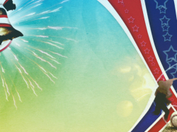
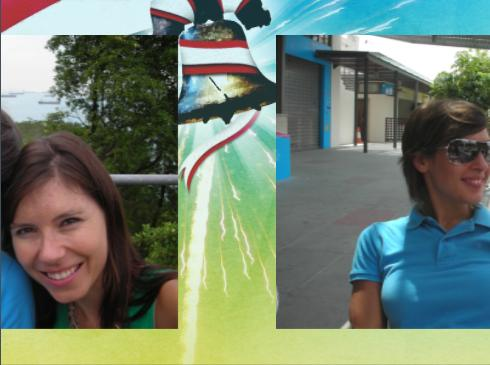
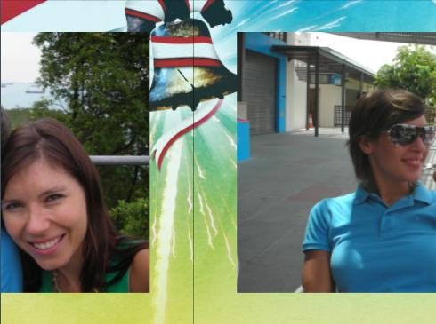

9.37 SeamlessBackground
Same as PictureQuad except that if you place two images next to each other, there will be no join seam visible. This is useful for tiling images.
| Parameters |
| Default |
| Range |
| Description |
| Path |
| " " |
| n/a |
| The path of the image file |
|
|
|
| ||||
| Quality |
| 2 |
| {0, 1, 2, 3} |
|
|
|
|
|
| ||||
| OnDemand |
| 0 |
| {0,1} |
| When 0, the image is loaded and kept alive for the life of the muvee. When 1, it is loaded only on demand to minimize texture memory consumption. Use 1 for large backgrounds that are not used in every segment. That way, you can have as many backgrounds as you want without incurring any additional texture memory overhead. |
|
|
|
| ||||
| ScaleX |
| 1.0 |
| (0.0,1.0] |
| We can choose to scale the image before it is displayed. This parameter is the x-axis scale |
|
|
|
| ||||
| ScaleY |
| 1.0 |
| (0.0,1.0] |
| We can choose to scale the image before it is displayed. This parameter is the y-axis scale |
9.37.1 Examples
9.37.1.1 Seamlessbackground example
; muSE v2 ; My awefully nice style. ; This style creates a nice slide with a continuous background. (style-parameters) (segment-durations 8.0) (define muvee-global-effect (effect-stack (effect "Perspective" (A)) (effect "CropMedia" (A)))) (define background (looping-sequence "01.jpg" "02.jpg")) (define option1 (layers (A) ; display the background (effect "PictureQuad" () (param "Path" (resource (background)))) ; Translate the user image it by 0.01 in the z-axis. ; We also scale it to 0.8 its original size. ; Else it'll completely cover the background (effect-stack (effect "Translate" (A) (param "z" 0.01)) (effect "Scale" () (input 0 A) (param "x" 0.8) (param "y" 0.8))))) (define option2 (layers (A) ; display the background (effect "SeamlessBackground" () (param "Path" (resource (background)))) ; Translate the user image it by 0.01 in the z-axis. ; we also scale it to 0.8 its original size. ; Else it'll completely cover the background (effect-stack (effect "Translate" (A) (param "z" 0.01)) (effect "Scale" () (input 0 A) (param "x" 0.8) (param "y" 0.8))))) ; (define muvee-segment-effect option1) (define muvee-segment-effect option2) ; This transition does the slide motion. ; Input A starts at rest and moves out of the screen ; Input B starts from outside and replaces inputA (define muvee-transition (layers (A B) ; input A starts at x = 0 and ; end at x = -(1.999 * the screen aspect ratio) (effect "Translate" () (input 0 A) (param "x" 0.0 (linear 1.0 (- 0.0 (* 1.999 render-aspect-ratio))))) ; input B starts at x = (1.999 * the screen aspect ratio) ; and ends at x = 0.0 (effect "Translate" () (input 0 B) (param "x" (* 1.997 render-aspect-ratio) (linear 1.0 0.0)))))
The style above displays the user image on top of some fancy background. The main feature of this style is that the background is continuous. Take a look at the two images below. The image on the left and the image on the right are continuous. If you were to join them together, it would feel as if you are looking at one really wide image.

Let’s go back to the style code again. I have defined option1 and option2. They are essentially the same code with the exception that the former uses PictureQuad and the latter uses "SeamlessBackground". The code above uses option2. You can try out option1 by uncommenting it and commenting the line
(define muvee-segment-effect option2)
I have taken a screenshot of both options. They are displayed below:
Below is the seamlessBackground version.

Below is the pictureQuad version.

As you can see, PictureQuad is good in cases where you want to display one image. In cases where you want to align a bunch of pictures to make them look seamless, SeamlessBackground is the effect to use.